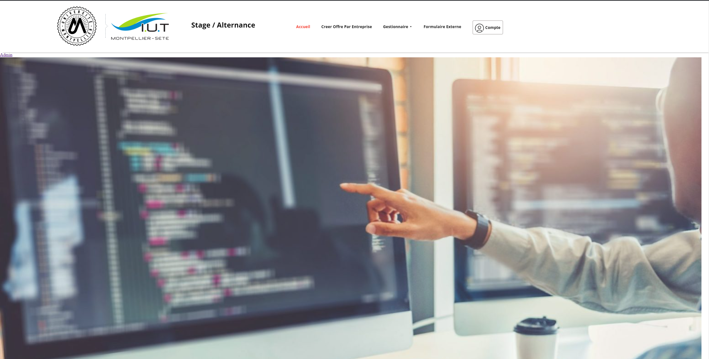
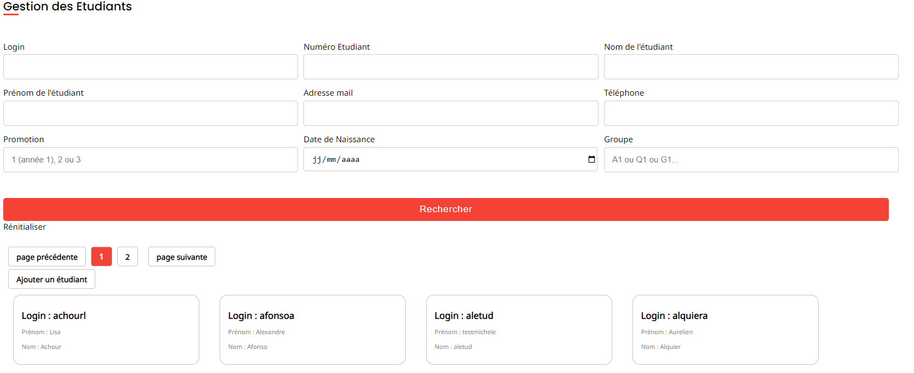

Projet SAE - Plateforme Stage/Alternance
Contexte du Projet
Le projet SAE Stage/Alternance a été réalisé durant le Semestre 3 du BUT Informatique. L'objectif principal était de développer une plateforme permettant aux étudiants de trouver des stages ou des alternances, en regroupant des offres et en facilitant les échanges avec les entreprises.
Ce projet a été mené en groupe, avec une organisation inspirée des méthodes agiles, simulant une petite entreprise où chaque membre avait un rôle bien défini.
Méthodes de Travail et Résultats
Nous avons suivi un cadre Scrum pour la gestion du projet :
- Product Owner (PO) : Responsable du dialogue avec le client, il a collecté et priorisé les besoins fonctionnels.
- Scrum Master : Chargé de convertir les besoins en tâches sur Trello, avec des poids pour l'importance et la difficulté.
- Développement en itérations, avec des livraisons régulières pour valider les fonctionnalités.
Résultats obtenus
- Une interface utilisateur claire pour naviguer et postuler aux offres.
- Un espace entreprise pour publier des annonces et gérer les candidatures.
- Un tableau de bord permettant aux administrateurs de modérer les contenus.
Preuves Visuelles




Technologies Utilisées
- PHP pour la logique backend.
- JavaScript pour les fonctionnalités interactives.
- CSS et HTML pour la mise en page et le stylisme.
- Trello pour la gestion des tâches et la priorisation.
Compétences Mobilisées
- C1 : Réaliser un développement d'application
- Conception et développement des fonctionnalités clés de la plateforme.
- Tests unitaires et validation des fonctionnalités.
- C2 : Concevoir des interfaces utilisateur
- Création d'une interface ergonomique et responsive.
- Intégration des retours utilisateurs pour améliorer l'expérience.
- C3 : Gérer un projet
- Organisation des tâches en sprints hebdomadaires.
- Respect des délais et des priorités définies par le PO.
- C4 : Gérer des données de l'information
- Conception et administration d'une base de données MySQL.
- Optimisation des requêtes pour garantir des performances élevées.
- C5 : Collaborer au sein d'une équipe informatique
- Participation active aux réunions et aux revues de code.
- Utilisation de Git pour la gestion collaborative du code.
- C6 : Assurer la qualité et la sécurité des services informatiques
- Implémentation de mécanismes de sécurité (validation des inputs, gestion des sessions).
- Suivi des bonnes pratiques pour garantir un code robuste et maintenable.